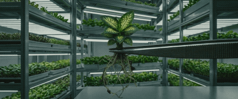
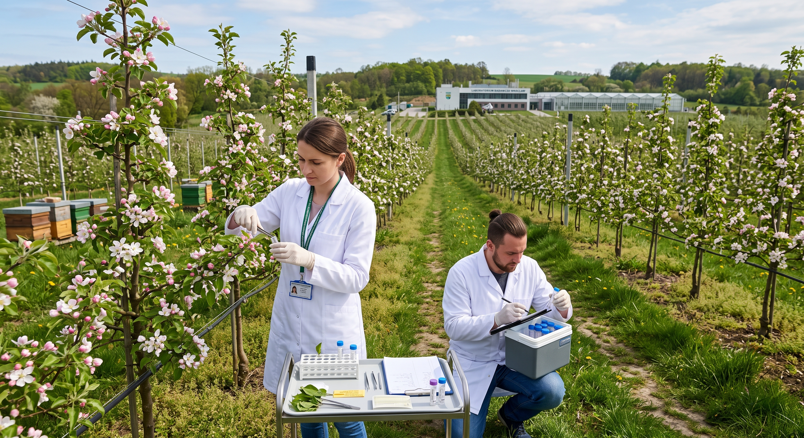
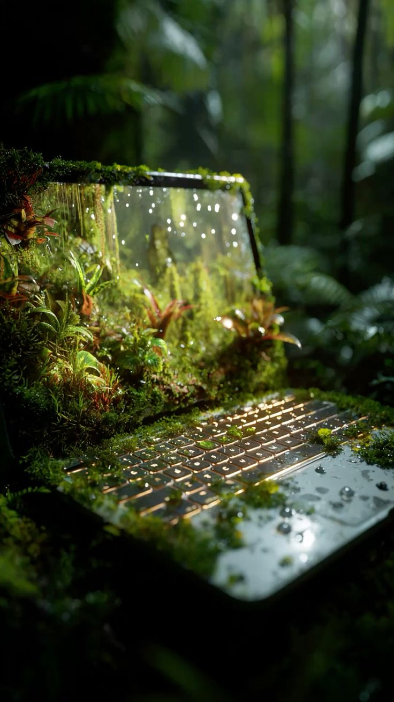
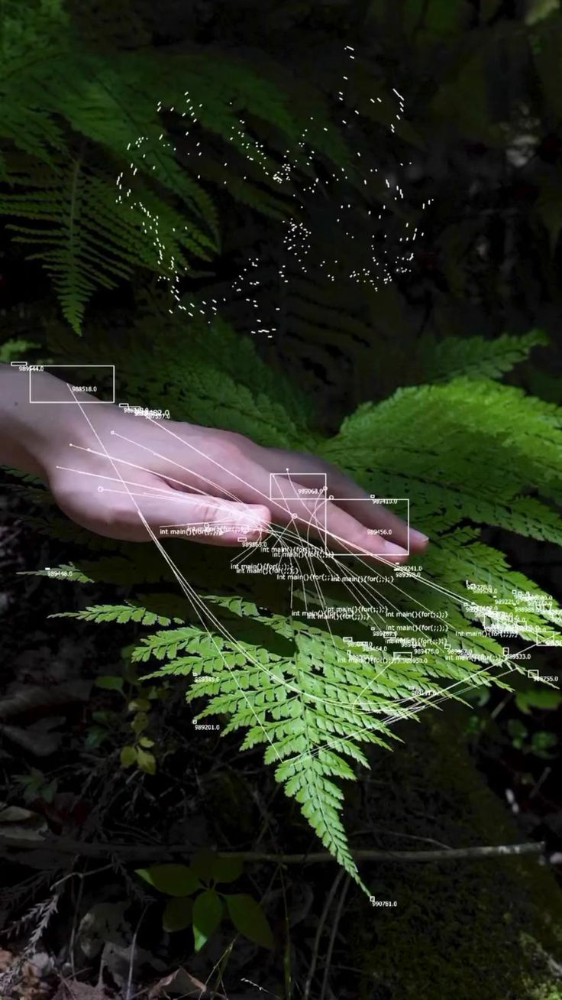
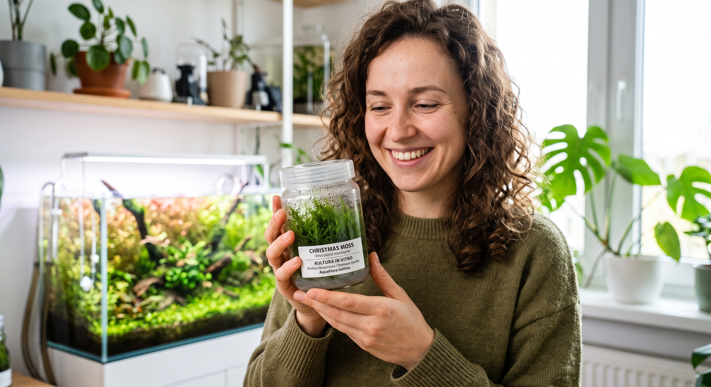

Anubias barteri var. nana Anubias nana
Rośnie wolno i wybacza błędy — nie wymaga CO₂ ani mocnego światła. Kłącze przywiązujesz do korzenia lub kamienia, nigdy nie zakopujesz w podłożu.
22 PLN
kubek 5×5 cm · ok. 15 sadzonek · wysyłka w 48 h

Anubias barteri var. nana Anubias nana
Rośnie wolno i wybacza błędy — nie wymaga CO₂ ani mocnego światła. Kłącze przywiązujesz do korzenia lub kamienia, nigdy nie zakopujesz w podłożu.
22 PLN
kubek 5×5 cm · ok. 15 sadzonek · wysyłka w 48 h

Cryptocoryne wendtii Kryptokoryna wendta
Brązowo-zielona, średnie tempo wzrostu. Po przesadzeniu zrzuca liście i odbija w trzecim tygodniu — to normalny przebieg, nie choroba.
18 PLN
kubek 5×5 cm · 12 dostępnych

Zestaw startowy
Trzy gatunki na pierwsze akwarium: anubias, mikrozorium i kryptokoryna. Żaden nie wymaga CO₂. W środku instrukcja aklimatyzacji na siedem dni.
48 PLN zamiast 60 PLN
3 kubki 5×5 cm · 8 zestawów dostępnych
48 h wysyłka zamówień
100 % klonów in vitro
14 dni na zwrot

Kamino BioLabs
Technologia hodowli, bank roślin, próby dla sektora kosmicznego.
bank: 214 genotypów temp. 24,0 °C światło 16 h/d

PomonaLab
Odtwarzamy stare odmiany drzew owocowych z pojedynczych pąków.
Malus domestica 'Kosztela' Kosztela · odmiana z XVIII w. · 6 drzew matecznych
Roślina siedzi na żelu z pożywką, w zamkniętym słoiku, bez kontaktu z powietrzem z zewnątrz. Stąd bierze się brak glonów i pasożytów.
Sterylna atmosfera: słoik otwieramy dopiero u Ciebie.
Eksplantat startowy ma 3–5 mm — sam wierzchołek wzrostu.
Światło LED przez 16 godzin na dobę.
Pożywka: agar 7 g/l, sacharoza 30 g/l.
pH ustawiane na 5,7 przed sterylizacją.
Autoklaw: 121 °C przez 20 minut.

12 sierpnia 2026
Siedem dni aklimatyzacji, krok po kroku. Najczęstszy błąd to wsadzenie kłącza pod żwir.

29 lipca 2026
Sole mineralne, cukier, witaminy i agar. Rozpisujemy, co robi każdy składnik.

3 lipca 2026
Anubias, mikrozorium i mech jawajski przeżyją pierwszy miesiąc bez CO₂ i bez nawozu.

„Zamówiłam sześć słoików w kwietniu. Wszystkie sadzonki przyjęły się w ciągu trzech tygodni, żadna nie przyniosła glonów ani ślimaków."